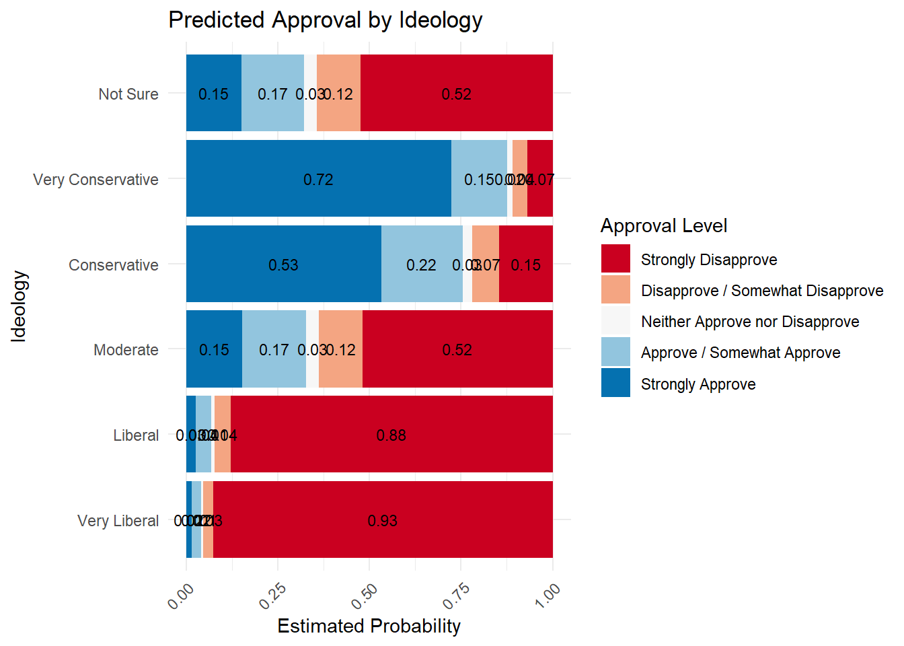

Warning: package 'gtsummary' was built under R version 4.5.1Warning: package 'equatiomatic' was built under R version 4.5.1Warning: package 'gtsummary' was built under R version 4.5.1Warning: package 'equatiomatic' was built under R version 4.5.1
Re-fitting to get Hessian
Using the CES, which is one of the largest political surveys in the United States, we seek to make a predictive model which could help us see a relationship between approval of the president and an individual’s political ideology.
With CES data, we’re studying how presidential approval relates to ideology in 2020, but we have to consider that survey participants might not fully represent all Americans. Our cumulative ordinal regression model suggests that people who are very conservative are about 5.6 units higher in presidential approval than those who are very liberal, with a 95% confidence interval from 4.9 to 6.2.
Re-fitting to get Hessian
Re-fitting to get Hessian\[ \begin{aligned} \log\left[ \frac { P( \operatorname{approval} \leq \operatorname{Strongly\ Disapprove} ) }{ 1 - P( \operatorname{approval} \leq \operatorname{Strongly\ Disapprove} ) } \right] &= 1.87 + 0.56(\operatorname{ideo\logy}_{\operatorname{Liberal}}) + 2.46(\operatorname{ideo\logy}_{\operatorname{Moderate}}) + 4.3(\operatorname{ideo\logy}_{\operatorname{Conservative}}) + 5.14(\operatorname{ideo\logy}_{\operatorname{Very\ Conservative}}) + 2.44(\operatorname{ideo\logy}_{\operatorname{Not\ Sure}}) + 0.67(\operatorname{faminc}_{\operatorname{.L}}) - 0.21(\operatorname{faminc}_{\operatorname{.Q}}) + 0.02(\operatorname{faminc}_{\operatorname{.C}}) + 0.13(\operatorname{faminc}_{\operatorname{\texttt{^}4}}) - 0.04(\operatorname{faminc}_{\operatorname{\texttt{^}5}}) - 0.19(\operatorname{faminc}_{\operatorname{\texttt{^}6}}) - 0.11(\operatorname{faminc}_{\operatorname{\texttt{^}7}}) + 0.19(\operatorname{faminc}_{\operatorname{\texttt{^}8}}) + 0.03(\operatorname{faminc}_{\operatorname{\texttt{^}9}}) + 0.1(\operatorname{faminc}_{\operatorname{\texttt{^}10}}) - 0.15(\operatorname{faminc}_{\operatorname{\texttt{^}11}}) - 0.39(\operatorname{education}_{\operatorname{High\ School\ Graduate}}) - 0.71(\operatorname{education}_{\operatorname{Some\ College}}) - 0.47(\operatorname{education}_{\operatorname{2-Year}}) - 0.95(\operatorname{education}_{\operatorname{4-Year}}) - 1.15(\operatorname{education}_{\operatorname{Post-Grad}}) \\ \log\left[ \frac { P( \operatorname{approval} \leq \operatorname{Disapprove\ /\ Somewhat\ Disapprove} ) }{ 1 - P( \operatorname{approval} \leq \operatorname{Disapprove\ /\ Somewhat\ Disapprove} ) } \right] &= 2.36 + 0.56(\operatorname{ideo\logy}_{\operatorname{Liberal}}) + 2.46(\operatorname{ideo\logy}_{\operatorname{Moderate}}) + 4.3(\operatorname{ideo\logy}_{\operatorname{Conservative}}) + 5.14(\operatorname{ideo\logy}_{\operatorname{Very\ Conservative}}) + 2.44(\operatorname{ideo\logy}_{\operatorname{Not\ Sure}}) + 0.67(\operatorname{faminc}_{\operatorname{.L}}) - 0.21(\operatorname{faminc}_{\operatorname{.Q}}) + 0.02(\operatorname{faminc}_{\operatorname{.C}}) + 0.13(\operatorname{faminc}_{\operatorname{\texttt{^}4}}) - 0.04(\operatorname{faminc}_{\operatorname{\texttt{^}5}}) - 0.19(\operatorname{faminc}_{\operatorname{\texttt{^}6}}) - 0.11(\operatorname{faminc}_{\operatorname{\texttt{^}7}}) + 0.19(\operatorname{faminc}_{\operatorname{\texttt{^}8}}) + 0.03(\operatorname{faminc}_{\operatorname{\texttt{^}9}}) + 0.1(\operatorname{faminc}_{\operatorname{\texttt{^}10}}) - 0.15(\operatorname{faminc}_{\operatorname{\texttt{^}11}}) - 0.39(\operatorname{education}_{\operatorname{High\ School\ Graduate}}) - 0.71(\operatorname{education}_{\operatorname{Some\ College}}) - 0.47(\operatorname{education}_{\operatorname{2-Year}}) - 0.95(\operatorname{education}_{\operatorname{4-Year}}) - 1.15(\operatorname{education}_{\operatorname{Post-Grad}}) \\ \log\left[ \frac { P( \operatorname{approval} \leq \operatorname{Neither\ Approve\ nor\ Disapprove} ) }{ 1 - P( \operatorname{approval} \leq \operatorname{Neither\ Approve\ nor\ Disapprove} ) } \right] &= 2.52 + 0.56(\operatorname{ideo\logy}_{\operatorname{Liberal}}) + 2.46(\operatorname{ideo\logy}_{\operatorname{Moderate}}) + 4.3(\operatorname{ideo\logy}_{\operatorname{Conservative}}) + 5.14(\operatorname{ideo\logy}_{\operatorname{Very\ Conservative}}) + 2.44(\operatorname{ideo\logy}_{\operatorname{Not\ Sure}}) + 0.67(\operatorname{faminc}_{\operatorname{.L}}) - 0.21(\operatorname{faminc}_{\operatorname{.Q}}) + 0.02(\operatorname{faminc}_{\operatorname{.C}}) + 0.13(\operatorname{faminc}_{\operatorname{\texttt{^}4}}) - 0.04(\operatorname{faminc}_{\operatorname{\texttt{^}5}}) - 0.19(\operatorname{faminc}_{\operatorname{\texttt{^}6}}) - 0.11(\operatorname{faminc}_{\operatorname{\texttt{^}7}}) + 0.19(\operatorname{faminc}_{\operatorname{\texttt{^}8}}) + 0.03(\operatorname{faminc}_{\operatorname{\texttt{^}9}}) + 0.1(\operatorname{faminc}_{\operatorname{\texttt{^}10}}) - 0.15(\operatorname{faminc}_{\operatorname{\texttt{^}11}}) - 0.39(\operatorname{education}_{\operatorname{High\ School\ Graduate}}) - 0.71(\operatorname{education}_{\operatorname{Some\ College}}) - 0.47(\operatorname{education}_{\operatorname{2-Year}}) - 0.95(\operatorname{education}_{\operatorname{4-Year}}) - 1.15(\operatorname{education}_{\operatorname{Post-Grad}}) \\ \log\left[ \frac { P( \operatorname{approval} \leq \operatorname{Approve\ /\ Somewhat\ Approve} ) }{ 1 - P( \operatorname{approval} \leq \operatorname{Approve\ /\ Somewhat\ Approve} ) } \right] &= 3.51 + 0.56(\operatorname{ideo\logy}_{\operatorname{Liberal}}) + 2.46(\operatorname{ideo\logy}_{\operatorname{Moderate}}) + 4.3(\operatorname{ideo\logy}_{\operatorname{Conservative}}) + 5.14(\operatorname{ideo\logy}_{\operatorname{Very\ Conservative}}) + 2.44(\operatorname{ideo\logy}_{\operatorname{Not\ Sure}}) + 0.67(\operatorname{faminc}_{\operatorname{.L}}) - 0.21(\operatorname{faminc}_{\operatorname{.Q}}) + 0.02(\operatorname{faminc}_{\operatorname{.C}}) + 0.13(\operatorname{faminc}_{\operatorname{\texttt{^}4}}) - 0.04(\operatorname{faminc}_{\operatorname{\texttt{^}5}}) - 0.19(\operatorname{faminc}_{\operatorname{\texttt{^}6}}) - 0.11(\operatorname{faminc}_{\operatorname{\texttt{^}7}}) + 0.19(\operatorname{faminc}_{\operatorname{\texttt{^}8}}) + 0.03(\operatorname{faminc}_{\operatorname{\texttt{^}9}}) + 0.1(\operatorname{faminc}_{\operatorname{\texttt{^}10}}) - 0.15(\operatorname{faminc}_{\operatorname{\texttt{^}11}}) - 0.39(\operatorname{education}_{\operatorname{High\ School\ Graduate}}) - 0.71(\operatorname{education}_{\operatorname{Some\ College}}) - 0.47(\operatorname{education}_{\operatorname{2-Year}}) - 0.95(\operatorname{education}_{\operatorname{4-Year}}) - 1.15(\operatorname{education}_{\operatorname{Post-Grad}}) \end{aligned} \]
Re-fitting to get Hessian| Characteristic | log(OR) | 95% CI |
|---|---|---|
| Ideology (5 point) | ||
| Very Liberal | — | — |
| Liberal | 0.56 | 0.02, 1.1 |
| Moderate | 2.5 | 2.0, 3.0 |
| Conservative | 4.3 | 3.8, 4.8 |
| Very Conservative | 5.1 | 4.6, 5.7 |
| Not Sure | 2.4 | 1.9, 3.0 |
| faminc | ||
| faminc.L | 0.67 | 0.27, 1.1 |
| faminc.Q | -0.21 | -0.57, 0.15 |
| faminc.C | 0.02 | -0.32, 0.36 |
| faminc^4 | 0.13 | -0.22, 0.49 |
| faminc^5 | -0.04 | -0.40, 0.31 |
| faminc^6 | -0.19 | -0.54, 0.17 |
| faminc^7 | -0.11 | -0.46, 0.24 |
| faminc^8 | 0.19 | -0.15, 0.53 |
| faminc^9 | 0.03 | -0.30, 0.36 |
| faminc^10 | 0.10 | -0.23, 0.43 |
| faminc^11 | -0.15 | -0.50, 0.20 |
| Education | ||
| No HS | — | — |
| High School Graduate | -0.39 | -0.90, 0.12 |
| Some College | -0.71 | -1.2, -0.17 |
| 2-Year | -0.47 | -1.0, 0.11 |
| 4-Year | -0.95 | -1.5, -0.40 |
| Post-Grad | -1.2 | -1.7, -0.55 |
| Abbreviations: CI = Confidence Interval, OR = Odds Ratio | ||